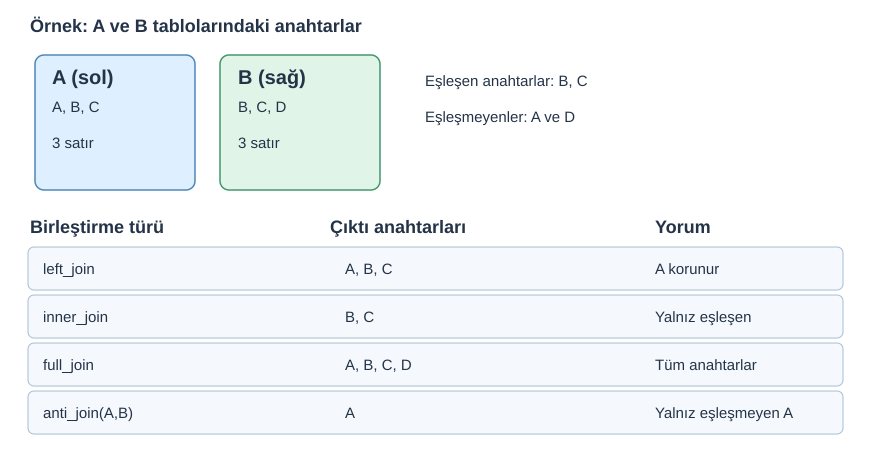

13 · Tabloları Güvenle Birleştirme (JOIN)
Kavram → soru → kod → kontrol → uygulama
Önce kısa açıklamayı okuyun; kodun sonucunu tahmin edin; ardından RStudio’da satır satır çalıştırın. A temel sınıf içeriği, B pekiştirme, C ise bağımsız çalışmadır. Tüm kodları aynı gün bitirmek zorunda değilsiniz.
Uygulama dosyası: R scriptini indir · Alıştırmaları indir · Tüm materyaller
Ön koşul: RStudio Project ile çalışma, veri okuma ve temel nesne/veri yapıları. Veri: data/wdi/ altındaki kitap kaynaklı WDI eğitim alt kümeleri. Dosya yolları proje köküne göredir.
1. Neden iki tabloyu birleştiriyoruz? (A)
Örneğin ülke–yıl göstergelerimiz bir tabloda, bölge ve gelir grubu metadata bilgilerimiz başka tabloda olabilir. JOIN, iki tabloyu ortak anahtarlar üzerinden ilişkilendirir. bind_rows() ise alt alta satır ekler; JOIN ile aynı işlem değildir.
Gözlem birimi: 2019 kesitinde her ülke tek satırdır. Panelde ise aynı ülke farklı yıllarda tekrar eder. Anahtarın tekilliği bağlama göre değişir.
2. JOIN şeması — küçük örnek (A)

Şema eğitim için özgün olarak hazırlanmıştır. Kavramsal kaynak: R for Data Science 2e, Joins ve dplyr join belgeleri.
library(dplyr)
a <- tibble(kod = c("A", "B", "C"), sayi = c(10, 20, 30))
b <- tibble(kod = c("B", "C", "D"), grup = c("X", "Y", "Z"))
left_join(a, b, by = "kod")
inner_join(a, b, by = "kod")
anti_join(a, b, by = "kod")| Fonksiyon | Hangi satırlar kalır? | Kullanım örneği |
|---|---|---|
left_join(x,y) |
x tarafının tüm satırları |
Ülke tablosuna bölge eklemek |
inner_join(x,y) |
İki tarafta da eşleşenler | Ortak kapsamı bulmak |
full_join(x,y) |
Her iki tablodaki satırlar | Kapsamları bir araya getirmek |
semi_join(x,y) |
x içinden eşleşenler; y sütunları gelmez |
Kapsam filtrelemek |
anti_join(x,y) |
x içinden eşleşmeyenler |
Eşleşme hatası kontrolü |
Eşleşmeyen kayıtlar inner_join() ile düşebilir; birden fazla eşleşme ise satır sayısını büyütebilir. Kod hata vermese bile analiz bozulabilir. relationship = "many-to-one" gibi beklenti tanımları, yanlış ilişkiyi hata olarak yakalamaya yardımcı olur.
3. WDI ile güvenli birleştirme (A)
wdi <- readr::read_csv("data/wdi/wdi_2019.csv", show_col_types = FALSE)
meta <- readr::read_csv("data/wdi/country_metadata.csv", show_col_types = FALSE)
# Metadata ülke kodu bakımından tekil mi?
anyDuplicated(meta$country_code)
sonuc <- wdi |>
left_join(meta |> select(country_code, region, income_group),
by = "country_code", relationship = "many-to-one")
stopifnot(nrow(sonuc) == nrow(wdi))
# Eşleşmeyenleri görün:
anti_join(wdi, meta, by = "country_code") |> select(country_code)Not: relationship eşleşme çokluğunu denetler, eşleşmeyen satırların varlığını tek başına garanti etmez. anti_join() ayrıca gereklidir.
4. Ülke–yıl anahtarı ve çoktan-çoğa hata (A/B)
panel <- readr::read_csv("data/wdi/wdi_panel_2015_2022.csv", show_col_types = FALSE)
# Doğru eşsiz anahtar: country_code + year
stopifnot(!anyDuplicated(panel[c("country_code", "year")]))
# Sadece country_code ile paneli panelle birleştirmek yanlış!
# (aynı ülkenin birden fazla yılı birçok kez eşleşir)Bu durumda many-to-many uyarısını sadece susturmak çözüm değildir. Önce hangi tablo düzeyinde çalışılması gerektiğini düşünün.
5. İleri örnekler (B/C)
join_by()iki tablodaki farklı isimli alanları eşleyebilir.right_join()vefull_join()kapsama sorularında kullanışlıdır.relationship,unmatched,na_matchesparametreleri belirli kontroller sunar.bind_rows()sütunları uyumlu tabloları alt alta getirir, anahtar eşleştirmesi yapmaz.
Kaynaklar: dplyr JOIN ayrıntıları · R for Data Science — Joins.
Öğrendiklerinizi kontrol edin
- Bu işlem hangi satırları veya sütunları değiştiriyor?
- Eksik değerler sonuçları nasıl etkiliyor?
- Beklenen gözlem sayısını nasıl doğrularım?
Alıştırma: Bu bölümün görevleri. Ek okuma: R Programlama Kitabı · dplyr · tidyr.